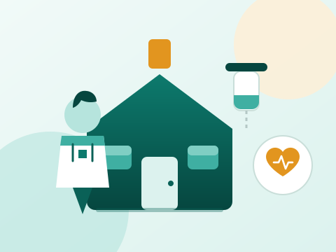

Professional home nursing
Support with appropriate nursing needs, post-discharge care, medication administration, monitoring and recovery assistance.
Clinic Pharmacy helps patients access professional healthcare support at home — nursing, IV therapy, wound care, physician visits and post-hospitalisation recovery, subject to clinical suitability, staffing and geographic coverage.
Every care plan is built around the individual, their clinical condition and — importantly — what can be safely delivered outside a hospital setting.
Support with appropriate nursing needs, post-discharge care, medication administration, monitoring and recovery assistance.
Intravenous fluids or prescribed medicines administered by qualified professionals following appropriate assessment, prescription and monitoring.
Convenient collection of blood and other eligible specimens at home, with appropriate identification, handling, transport and laboratory coordination.
Professional wound assessment, dressing changes and follow-up care for suitable wounds, including selected postoperative and chronic wounds.
Arranged consultations for patients who have difficulty attending a clinic or whose clinical circumstances make home assessment appropriate.
Coordinated recovery assistance, monitoring and referral where further evaluation is required.
Assistance with medication schedules, prescription organisation and administration where included in the patient's care plan.
A home visit is a clinical event, not a convenience service. The more we know before we arrive, the more useful the visit is.

Patient safety is central to home-care delivery, and it depends on honest boundaries as much as on skilled staff.
Where a home assessment indicates that a higher level of care is needed, we will tell you and help arrange an appropriate referral rather than continuing a service that is not safe for you.
Six steps from the first call to a documented care plan.
Tell us about the patient, the clinical situation, the location and the support already in place.
A clinician reviews the case — in person where possible — and confirms whether home care is suitable.
A written plan sets out the tasks, frequency, staffing, equipment and monitoring required, with responsibilities and escalation contacts.
Consent, scheduling, medication and equipment arrangements are confirmed with the patient and family.
Care is delivered by qualified professionals, documented at each visit and reviewed regularly.
Progress is reviewed with the clinician; the plan is adjusted, continued or stepped down as appropriate.
Home-care delivery is subject to clinical suitability, staffing, service availability and geographic coverage. Contact us with the patient's location and we will confirm feasibility before any booking is made. Where a location is not currently covered, we will say so and discuss alternatives.
Care is delivered by qualified nursing and clinical professionals working to the agreed care plan, supported by a supervising clinician. You will know who is attending, what they are trained to do, and how progress is being reported.
Yes. Where the care plan allows it, we can train and support family caregivers in dressing changes, medication administration, monitoring and recognising warning signs, with professional visits continuing alongside.
IV therapy requires a clinical indication, a prescription, an assessment of the patient's condition and monitoring, and confirmation that the home environment is appropriate. Some indications require hospital-level monitoring and would be redirected accordingly.
Cost depends on the services, frequency, duration and location. We provide a clear written estimate before any care begins, and confirm any additional costs — such as consumables or laboratory fees — in advance.
Yes, where the visitor is staying in private accommodation and the service is clinically appropriate and within our coverage. Coordination with your travel insurer is encouraged, and we can provide documentation for them.
Share the patient's situation, location and the support already in place. We will confirm suitability, staffing and a clear cost estimate.